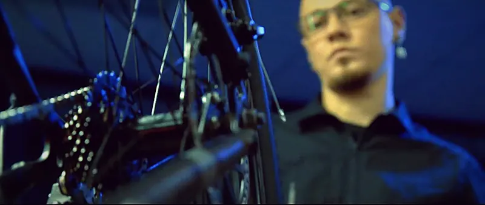
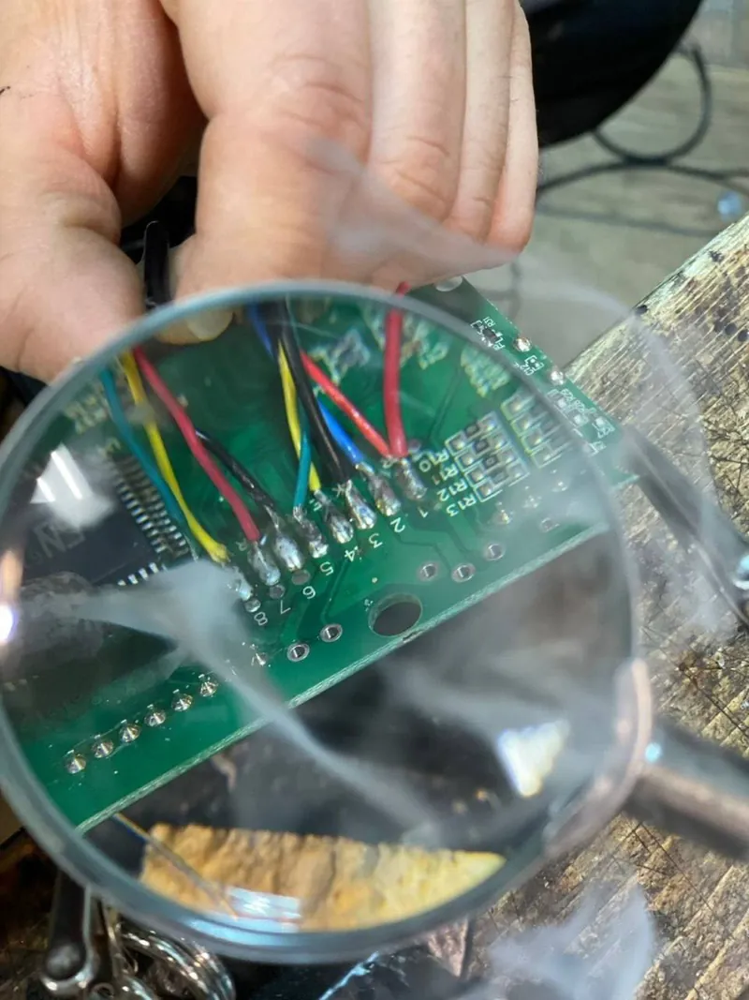
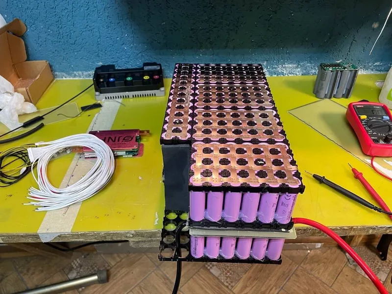
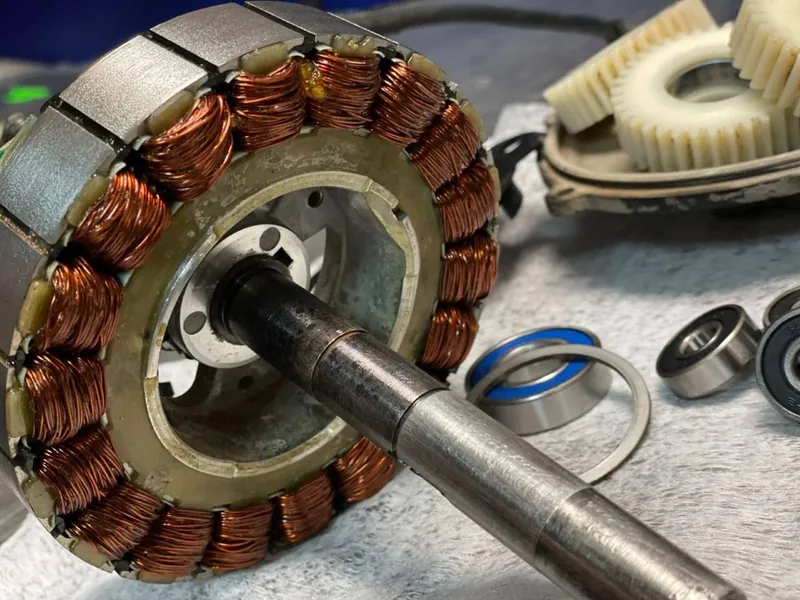
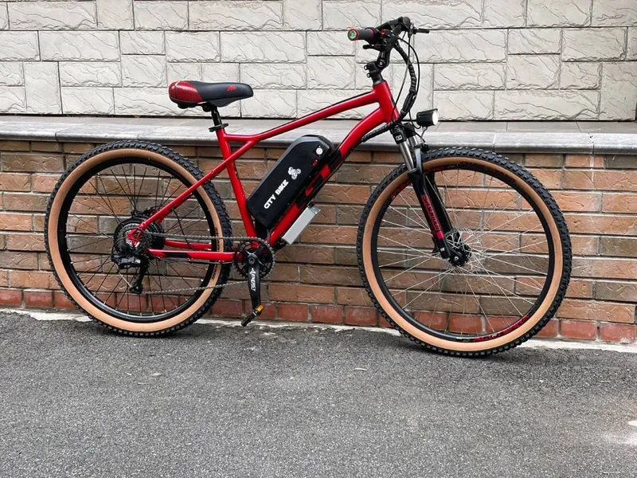
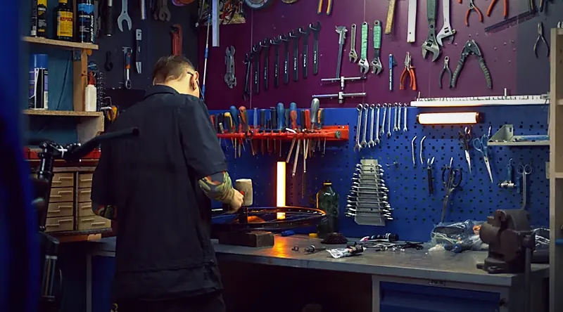
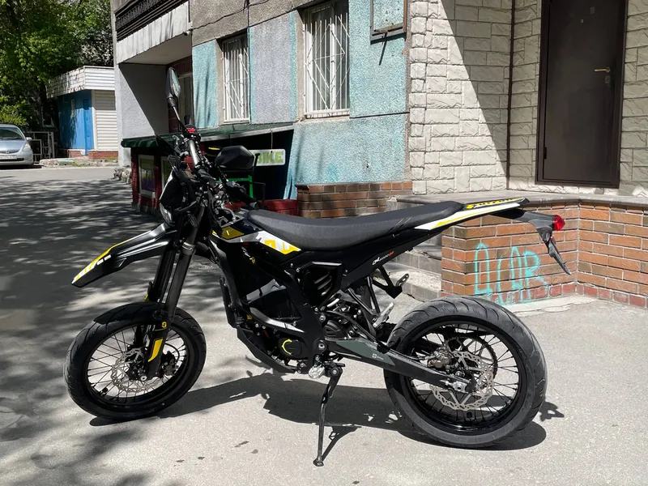

С 2012 года
Мастерская CITY BIKE
Вся наша команда катается сама: стрит, фристайл, электробайки каждый день. Поэтому мы как никто понимаем, как байк должен работать и чего от него ждать.
Команда под любую задачу
Сити Байк основан в 2012 году. В команде мастера-механики, инженеры, электронщики, маляры и токари, и все они райдеры.
Чиним, обслуживаем и собираем велосипеды, электробайки, электромото и аккумуляторы. Решаем задачи и любителя покататься по выходным, и профессионального райдера.

Отзывы
Что говорят в 2ГИС
До этого объездили много сервисов, но никто не брался. Ребята всё внимательно посмотрели, объяснили, не навязывая лишнего, отремонтировали буквально за 1–2 дня.
Порадовала бесплатная диагностика, всё чётко расписали по ремонту и обозначили стоимость. Велосипед работает как часы.
Говорят всегда всё прямо, как и есть, не пытаясь обмануть на копейку.
Оставлял на электрификацию свой Трек, перекраску рамы и замену комплектующих. Команда профи, сроки соблюдены.
Мне уже 2 года помогают с любыми велозадачами. А ещё ребята такие душевные.
Запчасти всегда есть в наличии. Ремонт делают в короткие сжатые сроки.








Приезжайте в мастерскую
Новосибирск, Вокзальная магистраль, 3, цоколь, въезд со двора. Ежедневно с 11:00 до 20:00, кроме воскресенья.